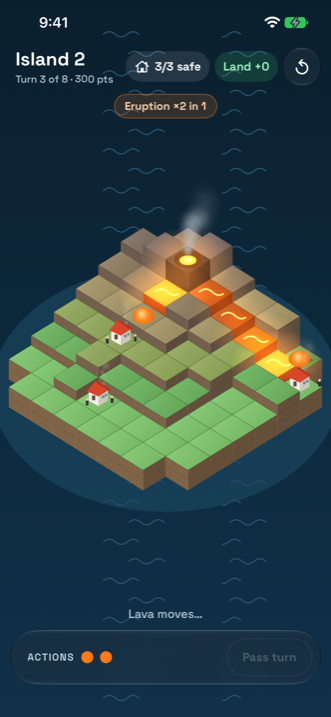

Puzzle-strategy for iPhone
Steer the lava. Settle the new land.
A volcano is erupting on a tiny island. Build walls and dig trenches to keep the lava out of your villages, and let it run into the sea, where it cools into land you can settle. The threat becomes the terrain, and the terrain becomes your city.
One price: no ads, no in-app purchases, no account. Portrait, one hand. iPhone, iOS 18 or later.

How it plays
Two actions a turn. Defend or expand.
An island lasts eight turns. Every turn the lava moves one tile per front, always downhill, and a dashed arrow shows you where before it happens. You get two actions to change its mind.
-
Tap land
Wall, then trench
One tap raises a wall two levels high. Tap it again and it sinks into a trench instead. The preview arc bends live, so you see the new path before you commit. Tap once more to undo.
-
Tap lava
Cool it into rock
Two actions turn a lava front into basalt on the spot. Lava you leave alone cools on its own after three turns and rises into a ridge that pushes later flows somewhere new.
-
Tap new coast
Settle what the lava made
Lava that reaches the sea cools into black new land. Found a house on it and keep it safe: houses grow into hamlets, then towns with lit windows, and towns are worth four times a house.
Eruptions come on turns two, four and six, each bigger than the last. From turn two, a red dashed tile shows where a lava bomb will land next turn, always next to your best town.
Ways to play
Five islands a run, about fifteen minutes.
-
Run
Five islands, each harder: more streams, a bigger last eruption, and from island three a fissure that opens into a second vent mid-island. After each island, pick one of three upgrades for the rest of the run: a free first wall each turn, heat-proof walls, a rain cloud, a harbour that doubles land points, a lookout that shows bombs two turns ahead.
-
Daily Island
The same island for everyone, every day, with a Game Center leaderboard that resets at midnight UTC.
-
Endless
Islands until one is lost. Each one adds another stream to the last eruption.
Made with care
Readable without colour. Quiet about you.
Accessible by design
- Colour is never the only signal: arrows have arrowheads, danger has a ring and a word, bombs have an X.
- Tap targets of 44 points or more, and Dynamic Type in the HUD.
- Reduce Motion, from the system or in the game, removes camera shake and slow motion.
- Haptics, sound and music each switch off on their own.
Nothing leaves your iPhone
- No account, no ads, no in-app purchases, no analytics, no tracking.
- Your runs and scores are saved on the device.
- The Daily Island leaderboard is the only online feature, and Apple's Game Center runs it.
Every turn has a real choice.
Save the village, or let the lava reach the sea and build on what it leaves behind. Flowline is coming to the App Store for iPhone.